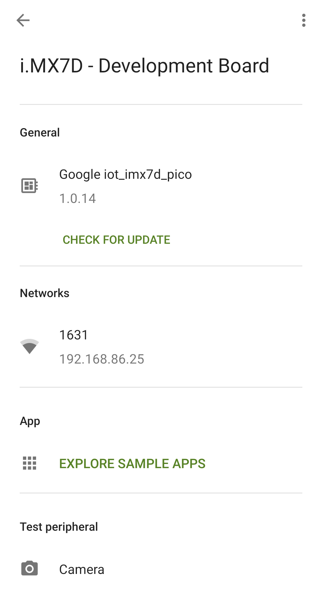
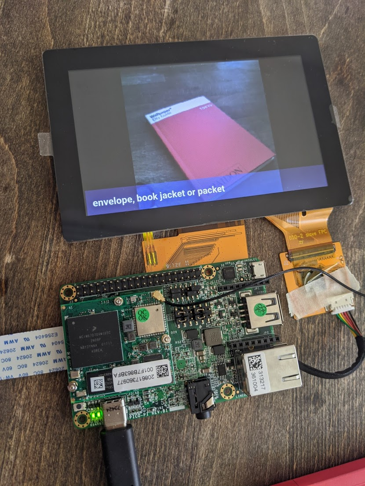
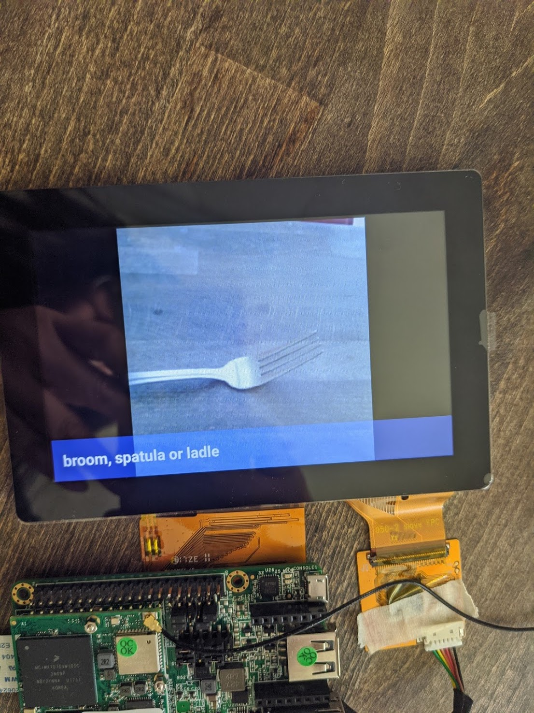
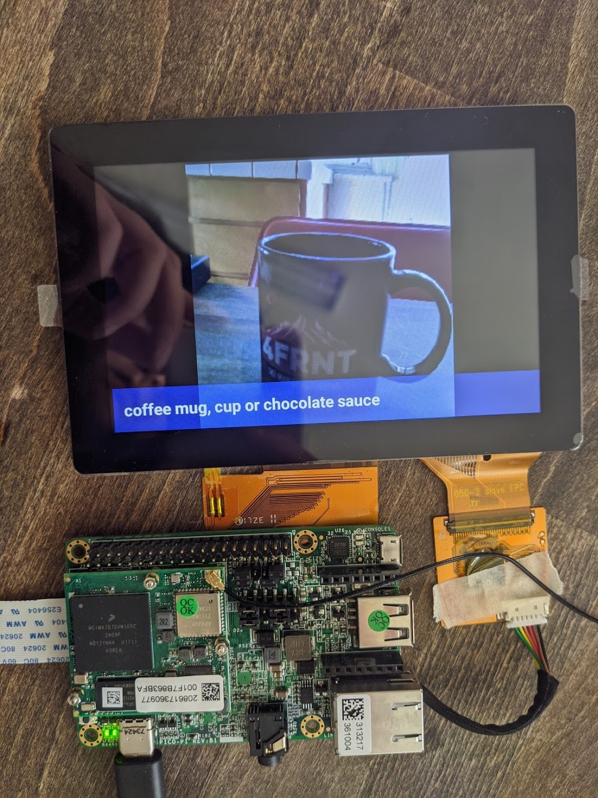
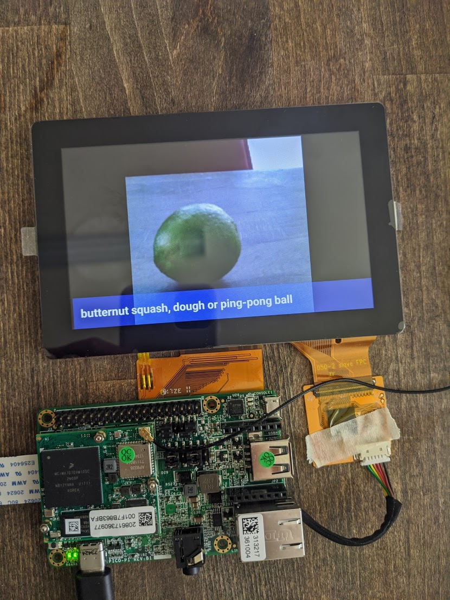
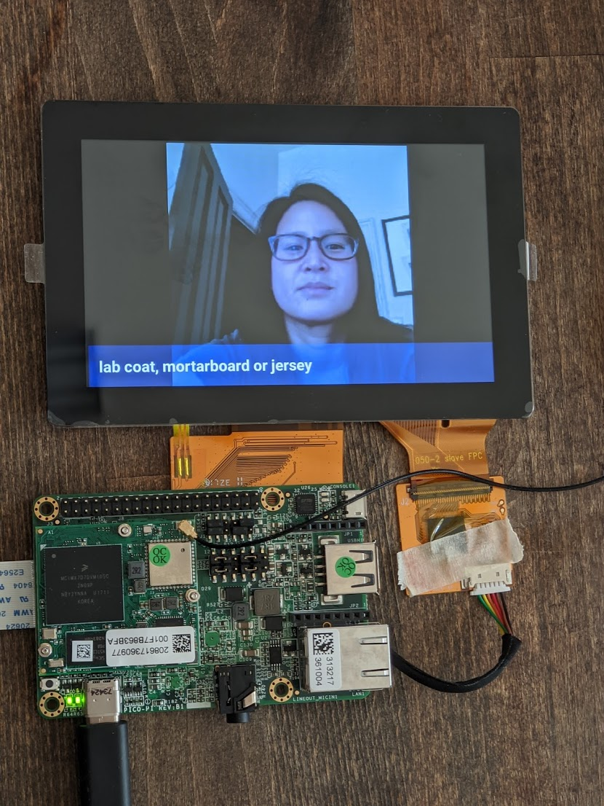

HI, MY NAME IS VIVIAN.
I'm currently an AR Data Program Manager at Niantic helping build a dynamic, 3D map of the world to enable new kinds of AR experiences. Some things that I enjoy in my free time are exploring outdoors, pushing my boundaries, and figuring out how to make the world a better place.
You can find me generally in the Bay Area while trying to explore the world one destination at a time. Whenever I get the chance, I am chronicling my adventures with my handy-dandy Fujifilm X100S and GoPro Hero4 Silver.
As far as I've known, my ancestry was a mix of Chinese and Vietnamese East-Asian. Wanting to discover my true genetic roots, I was eager to try out 23andMe to have clearer understanding of my background. This post will walk-through my experience using 23andMe as well as other similar tools.
First, I'd like to point out a few hesitations I had doing this.- Price. At $99 for Ancestry kit and $199 for Ancestry + Health kit, this is pretty pricey for just a 'curiosity' I had about my background
- FDA regulations. There had been concerns of what kind of data 23andMe was releasing to their customers... “potential health consequences that could result from false positive or false negative assessments for high-risk indications"
- East Asian data. 23andMe seemed to categorize all East Asians into either Chinese, Korean, or Japanese. The result is that East Asians get less comprehensive reports compared to people of European ancestry
In the end, I decided to jump the gun and thought it'd be a good learning experience. I've opted for the Ancestry kit over the Ancestry + Health because I decided that it’d be a better learning experience to use the raw data to learn more about my health using other tools.
THE PROCESS/TIMELINE
June 27th - Ordered Kit
June 28th - Kit Shipped
June 29th - Kit Received
June 30th - Kit Shipped back to 23andMe
July 7th - Kit Received by 23andMe
July 8th - Receiving and Quality Inspection Complete
July 30th - DNA Extraction Complete
August 1st- DNA Analysis Complete
August 1st - Quality Review Complete
August 1st - Initial Raw Data Processing Complete
August 4th - Computation and Report Generation Complete
MY 23ANDME ANCESTRY REPORT
This first diagram is the bulk of the ancestry report. It describes my ancestry based on genetic makeup. As you can see, the East Asian category isn’t very well defined. As far as I know, only Chinese, Japanese, Korea, Yakut, and Mongolian ancestries are currently categorized. I read somewhere that anything below 1% could just be noise so it will be safe to assume I’m not European.
This next tool is the Ancestry Timeline. It tells me about my ancestor’s ancestry, categorized by generations and time period. For the ‘Oceanian’ part, it says :
“You most likely had a fourth great-grandparent, fifth great-grandparent, sixth great-grandparent, or seventh great (or greater) grandparent who was 100% Oceanian. This person was likely born between 1720 and 1810.”
Next, we have some information about my ‘Maternal Line’. This is the line of women that I have descended from, tracing back to Eastern Africa. It shows the paths that are traced back and which branches my ancestors came from. Each of these diverse groups are labeled and according to this, my haplogroup is ‘M7c1’. There isn’t much info I can gather from this since I don’t know much about haplogroups but I thought it was cool learning about my ancestors’ migration paths.
Another tool that comes with the Ancestry kit is the Relative finder where you can find a list of people that are somewhat related to you, from ‘Close Relatives’ up to ‘Sixth Cousins’ and beyond.
You can also download your ‘Raw Data’ and use it to input into other tools like below. To do this, go to Tools > Browse Raw Data > Download.
DNA.LAND (FREE)
DNA.LAND basically shows me that I’m full Asian as well...but with different makeup! It seems as if DNA.LAND has a lot more data on Asians as it can distinguish Cambodian/Thai as well as Central Chinese from other Chinese categories.
DNA.LAND also has some wellness/physical traits below which I found somewhat accurate!
MyHeritage (FREE)
MyHeritage is a newer tool with less data and therefore is a lot more vague. I thought it’d be interesting trying the new service anyway.
GEDmatch (FREE)
GEDmatch is a pretty popular tool. However, I think it is a lot more technical and less user-friendly. This tool is great for comparing DNA one-to-one, or one-to-many from their database. I can’t show a snapshot of what this looks like because it also has other peoples’ information on it.
One of the tools that I liked from GEDmatch was the ‘Eye Color Predictor’.
Not only does it tell you the color that it thinks your eye is, but it also tells you exactly which part of your DNA contributes to it.
Another tool I enjoyed was ‘Are your parents related?’. It works by comparing your base pairs. I can tell you that my parents are not related but Joffrey, Myrcella, and Tommen definitely would’ve gotten some red flags.
WeGene (FREE)
I was particularly excited to try out WeGene for another take on my ancestry results since they are a Chinese company, and they might have more data on Asian DNA.
My above results seem pretty consistent with the other tools: mostly Chinese, with some Southeast Asian. I was surprised at how detailed the Chinese and Southeast Asian categories were.
Note: ‘kinh’ is Vietnamese
I also noticed that on their Chinese website, there are more reports (Health, Fitness, Metabolism, etc) that are not available on the English website. I found these reports interesting so I thought I’d share a few (even if some Google translations might be wrong).
I really enjoyed WeGene’s reports as I felt they are more geared towards Asians. I also think the health reports on the Chinese website are very detailed although there are probably some FDA regulations on some of that information (maybe why they are only on the Chinese site).
Promethease ($5)
Promethease is known as the favorite data analyzing tool (at least from the /r/23andme perspective). It is heavily health and disease focused (no ancestry). The difference with Promethease is that you have to pay $5 for the report to be generated. Your report is hosted on their site for 45 days, but you are emailed the HTML files to be able to render the report locally on your computer anytime after the 45 days is up.
There is A LOT to see on Promethease and it is slightly more technical and less user friendly than other tools, but basically it will tell you traits that come up from analyzing your data. Here is a sample:
Basically, it’s saying I have Asian Flush, which I am well aware of, thanks.
You can also sort by categories, magnitude, and good/bad traits. I feel like there is just so information on Promethease , you can spend hours looking through your data. I thought it was definitely worth the $5!
TL;DR
I had a lot of fun doing the 23andMe ancestry kit despite knowing that my report wouldn't be as comprehensive as someone with a European ancestry. Any genetic testing kit would be a great self-discovery experience of your genetic makeup, on top of you getting to contribute to more scientific discoveries! Just make sure you have realistic expectations instead of hoping to find some new crazy discovery about yourself. And make sure to be on the lookout for 23andMe sales on holidays!
← Back to Blogs
Grace Hopper Celebration is the world’s largest annual conference for women in computing. And this past year was no joke -- boasting over 18,000 attendees and held October 4th - October 6th at the humongous Orange County Convention Center in Orlando, Florida. I feel truly blessed to not only be able to spend 3 days with such inspiring and gifted women from all over the world but also to get a sponsorship through Google to attend this event.
PRE-CONFERENCE
On August 2nd, I received one of the best news I could’ve gotten to beat my mid-week slump -- I was selected as a travel grant recipient to attend the 2017 Grace Hopper Celebration of Women in Computing! This grant included conference registration, round trip flight to Orlando, hotel accommodations, $75 for miscellaneous reimbursements, and even a fun event planned just for grant recipients.
I’ve never attended such a big conference before, especially by myself, so I wasn’t too sure of what to expect. I began searching around online and found Facebook groups that helped people network prior to the event as well as answering any questions. I also prepped by checking the conference schedule and marking the talks/workshops that I definitely wanted to go to. Around a month before the conference, many companies started posting events (breakfasts, after parties, etc.) that they were hosting for GHC attendees. One of the cool ones that I saw was a HBO Game of Thrones after party at an ice bar!
DAY 0
I arrived in Orlando a day early to have some time to explore the city a bit. As soon as I checked into my hotel and dropped off my stuff, I headed straight to Universal Orlando Resort! I spent most of my time in the Harry Potter World - Hogsmeade section and was glad I was able to check it out since it’s not yet open in California yet. After Universal, I walked back to my hotel to explore the city a bit. My main takeaways about Orlando: It's super humid and it's known for alligators.
DAY 1
It's finally the start of the convention! I was particularly most excited for the keynote by Melinda Gates. She was an amazing speaker and truly someone inspirational. It was a great way to pump everyone up for the start of the conference. After the keynote, I explored the conference Expo Hall a bit to grab some free swag and to just feel out the area. The Expo Hall was huge! It would definitely take someone several trips to the Expo Hall throughout the conference to be able to cover the whole area. Afterwards, I went to a few sessions and some after parties.
DAY 2
After an exhausting first day, I was not as excited to wake up early to explore. However when I got back into the convention center, I immediately regained my energy. I attended a few more sessions this day and spent the rest of my time interviewing or exploring the Expo Hall. I got to meet some great companies and learn a bit more about their products. After day 2 of the conference, Google hosted a fancy dinner for all grant recipients for working professionals. They rented out a restaurant in the hotel lobby and had someone draw caricatures of everyone! I also finally got to meet some of the people that I was networking with in the Facebook groups before the event.
DAY 3
By the third day of the conference, my feet were in pain but my excitement for the conference kept me going. I was most excited for the event Google’s Women Techmakers was hosting for GHC -- they rented out Disney World’s Epcot for an after party! We got the whole park to ourselves and they had a DJ, photo booths, lots of delicious food, and towards the end we got to go on several rides that they opened up with no lines! Also at this point I was slightly considering buying another suitcase to bring back all the swag...
CONCLUSION/TIPS
Overall it was a great experience and I highly suggest any woman in tech try to attend if the opportunity comes up. You never know what will happen from it and at the least, you will leave with new friends, new swag, and an unforgettable experience. I actually had an interview while at GHC that eventually lead to my current job!
Tips for a GHC Attendee:
- Network in GHC groups before the event
- Sign up for events/parties hosted by companies
- Make a schedule for the talks that you definitely want to see -- while leaving extra time to explore the Expo Hall
- Be flexible with your schedule
- Prepare resumes and/or business cards
- Submit your resume to the GHC Attendee database as soon as you can! Companies will reach out to schedule interviews.
- Pack comfortable shoes, you will be walking a lot
- Network with as many people as you can
- Bring a half empty suitcase, you’ll be bringing home a lot of swag
- Come in with an open mind and you will have fun!
← Back to Blogs
Like many other people quarantining during COVID, I picked up a few new hobbies with all of the extra time that I at home. Some of my new hobbies consisted of paint-by-numbers, baking goods that I couldn't finish, and digging through things that I haven't touched in ages.
One of the things that I found laying around was a brand new, unopened Pico Pro Maker Kit that I had received at GHC a few years ago. I figured this would be a fun opportunity to test it out and tinker with some hardware.
CONNECTING AND SETTING UP THE KIT
I followed the instructions on the Android Things developer guide to connect and setup the kit.
The kit came with:
- Pico i.MX7 Dual Development Board
- Camera module
- 5-inch multi-touch display
- Wi-Fi antenna
Once I finished conncting the kit, I was ready to set things up. Through the Android Things console, I created a new product and downloaded the latest build. I then flashed the board with the latest image and ran setup utility to connect the board to my home wifi. I also downloaded the Android Things Toolkit on my phone to run sample apps.
Once the board was connected to my wifi, I was able to find my dev board on the Android Things Toolkit app. I explored the sample apps and selected TensorFlow Lite.

RUNNING TENSORFLOW LITE
TensorFlow Lite works by taking in an image input and outputing a few words that it thinks the object should be classified as. First, I held up my board's camera module towards and object. When I'm ready, I tap the multi-display screen and it triggers a snapshot to be taken. The multi-display screen will then instantly display the snapshot and a few words it may classify the object as. I found a few of them accurate, and some of them very inaccurate (mostly human face detection). Below are a few of the results I got.
    
← Back to Blogs


{kind=link}
{kind=link}
{kind=link}
{kind=link}
{kind=link}